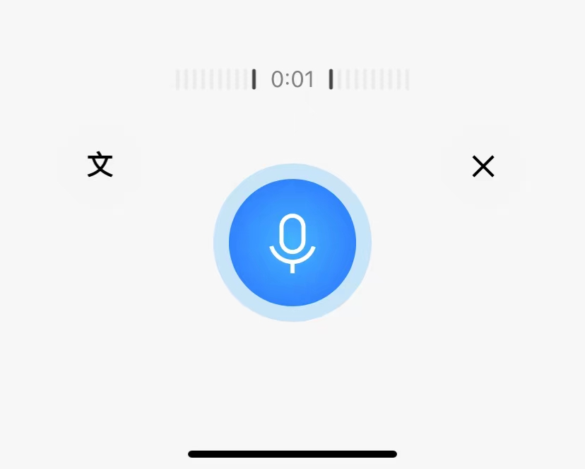
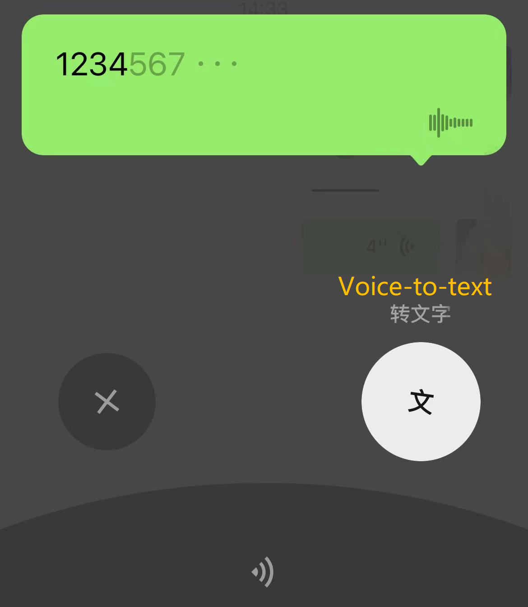
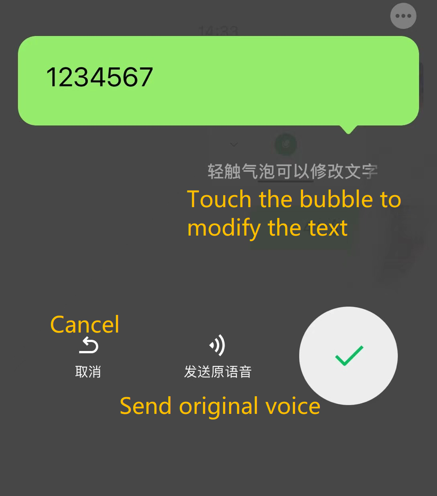

Working principle: Using Voice Recognition technology to evaluate the biometrics of your voice, including the frequency and flow of your voice. Every word you speak is broken up into segments of several tones, then digitized it.
Pros: Voice input method could handle easily, the learning cost is low, making it has wide range of users. And it is more efficient than traditional typing, and it is more beneficial to health.
Cons: When using voice typing, it exist errors caused by accent and other factors.
  